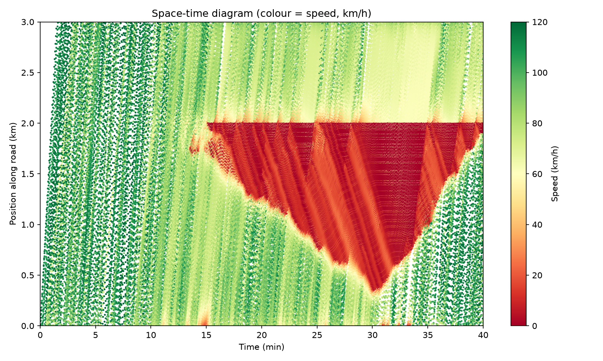
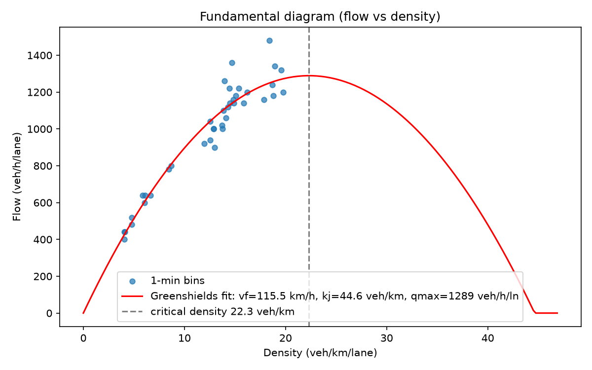
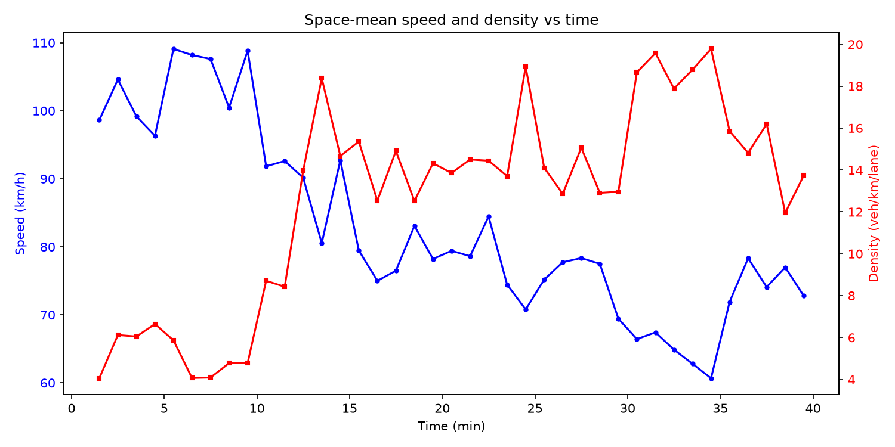
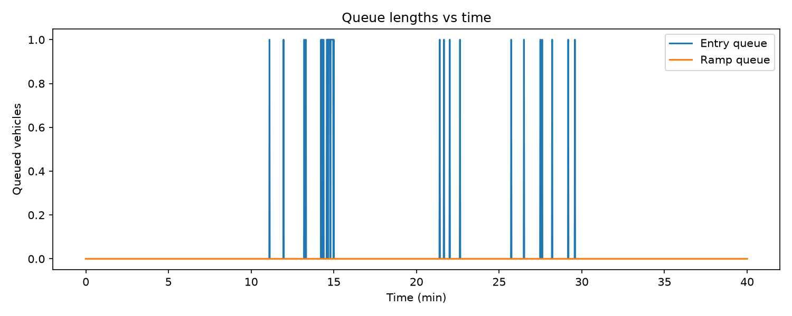

Three-lane freeway with a lane drop to two lanes at x=2000 m. Demand rises from 1800 to 4200 veh/h during the peak (600-1800 s), above the two-lane bottleneck capacity, so a queue forms upstream of the drop and discharges after the peak.
| Metric | Value |
|---|---|
| Mean travel time | 240.50 s |
| Median travel time | 187.20 s |
| 95th percentile | 583.60 s |
| Free-flow travel time | 99.36 s |
| Mean delay | 141.13 s |
No sustained stop-and-go wave detected.
vf = 115.5 km/h, kj = 44.6 veh/km, qmax = 1289 veh/h/ln, R² = 0.824




Generated by traffic-flow-simulator (IDM + MOBIL). See docs/RESEARCH.md.